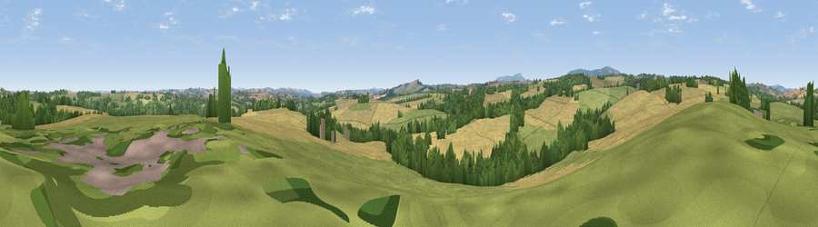

Viewpoint near Glazeley
#32531 in England · top 75% of its area beats it · near GlazeleyWhere it is
The exact computed spot (SO 69725 87075). Click the marker for map links.
The view, rendered

A 360° render of this exact spot computed from the terrain model, tree cover and land cover — summer colours, afternoon light, calibrated against photographs of famous viewpoints. Real trees, hedges and buildings will differ in detail.
The panorama
Grey silhouette: terrain skyline in each direction (720 bearings, Earth curvature and refraction included). Dashed green: skyline with trees (+15 m) and buildings (+8 m) as obstacles. Blue strip: how far the ground is visible on each bearing.
Where the view opens
Wedge length = distance to the farthest visible ground on that bearing (vegetation-aware). Rings at 10, 25 and 50 km.
What fills the view
46% cropland · 35% grassland · 19% woodland
Angular shares of the visible panorama (visual magnitude), not map area. Landscape diversity 0.46 (0–1 Shannon).
Key numbers
More beautiful places nearby
The staircase of upgrades: each row has a higher view potential than everything closer. Driving times are estimates from straight-line distance, calibrated against real road routing — check an actual route before setting out.
| Place | Direction | Drive | Score |
|---|---|---|---|
| Viewpoint near Chelmarsh | ENE · 2 km | ~6 min | 57.2 |
| Viewpoint near Hampton Loade | ESE · 4 km | ~9 min | 59.6 |
| Viewpoint near Chorley | S · 5 km | ~11 min | 60.6 |
| Knowle Hill | S · 5 km | ~12 min | 75.5 |
| Viewpoint near Burwarton | WSW · 10 km | ~20 min | 83.4 |
| Titterstone Clee | SW · 14 km | ~25 min | 83.8 |
| Viewpoint near Little Wenlock | NNW · 22 km | ~37 min | 86.6 |
| North Hill | S · 41 km | ~61 min | 86.8 |
52.48075, -2.44721 · source: screening · position refined by local search. Computed location — check access rights before visiting.